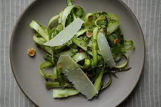

Asparagus & Mint Salad
The Perfect Starter for Lamb

This Salad is a light starter ahead of a hearty main course and most of the prep can be done in advance
Yields "4 servings" Prep Time "12 Minutes" Cook Time "1 Minute" Total Time "13 Minutes"
What you will need
For the Salad
- 1 pound asparagus spears
- 1/2 red onion, sliced into thin half moons
- 1/2 cup thinly sliced mint strips
- 1 ounce ricotta salata, shaved with a vegetable peeler (Ricotta salata is an aged version of fresh ricotta and has a firm texture)
For the Lemon Vinaigrette
- 1 teaspoon lemon zest
- 3 tablespoons fresh lemon juice
- 1 1/2 tablespoons sherry vinegar
- 1 teaspoon honey
- 2 tablespoons extra-virgin olive oil
- 1/2 teaspoon Kosher salt
- Freshly ground pepper
Steps
- In a small bowl or liquid measuring cup, whisk together vinaigrette ingredients and set aside.
- Snap off woody ends of asparagus spears, and cut on bias into 1-inch pieces.
- Blanch the asparagus: Bring a medium pot of water to boil; add asparagus and cook for 1 minute until bright green.
- Drain and run asparagus under cold water or shock in a bowl of ice water. Dry off asparagus and place in a medium salad bowl.
- Add sliced onion and mint to asparagus in bowl and toss with lemon vinaigrette.
- Serve salad with shaved ricotta salata on top.